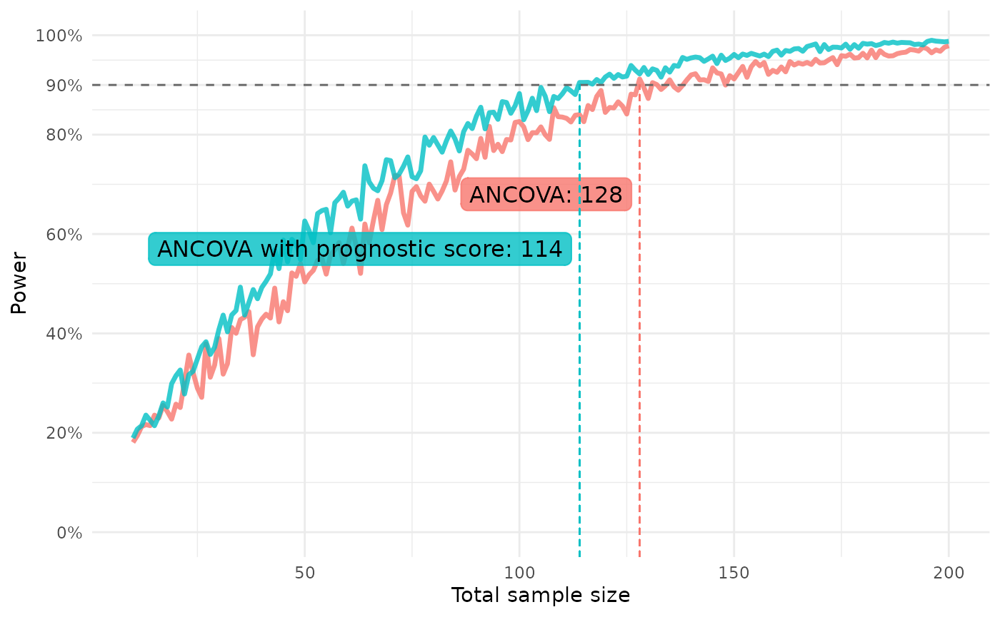

Setup-chunk to load the package, set a seed and turn off verbosity for the rendering of the vignette.
library(postcard)
withr::local_seed(1395878)
withr::local_options(list(postcard.verbose = 0))postcard provides tools for accurately estimating marginal effects using plug-in estimation with GLMs, including increasing precision using prognostic covariate adjustment. See Powering RCTs for marginal effects with GLMs using prognostic score adjustment by Højbjerre-Frandsen et. al (2025).
Plug-in estimation of marginal effects and variance estimation using influence functions
The use of plug-in estimation and influence functions can help us obtain more accurate estimates. Coupled with prognostic covariate adjustment, we can increase the precision of our estimates and obtain a higher power with sacrificing control over the type I error rate.
Introductory examples on the use of rctglm() and
rctglm_with_prognosticscore() functions are available here.
For more details, see vignette("model-fit").
Simulating data for exploratory analyses
First, we simulate some data to be able to enable showcasing of the
functionalities. For this we use the glm_data() function
from the package, where the user can specify an expression alongside
variables and a family of the response to then simulate a response from
a GLM with linear predictor given by the expression provided.
Fitting rctglm() without prognostic covariate
adjustment
The rctglm() function estimates any specified estimand
using plug-in estimation for randomised clinical trials and estimates
the variance using the influence function of the marginal effect
estimand.
The interface of rctglm() is similar to that of the
stats::glm() function but with an added mandatory
specification of
-
exposure_indicator: The randomisation variable in data, usually being the (name of) the treatment variable -
exposure_prob: The randomisation ratio - the probability of being allocated to group 1 (rather than 0)- As a default, a ratio of 1’s in data is used
-
estimand_fun: An estimand function- As a default, the function takes the average treatment effect (ATE) as the estimand
Thus, we can estimate the ATE by simply writing the below:
Note that as a default,
verbose = 2, meaning that information about the algorithm is printed to the console. However, here we suppress this behavior. See more invignette("model-fit").
ate <- rctglm(formula = Y ~ A * W,
exposure_indicator = A,
exposure_prob = 1/2,
data = dat_treat,
family = "gaussian") # Default valueThis creates an rctglm object which prints as
ate
#>
#> Object of class rctglm
#>
#> Call: rctglm(formula = Y ~ A * W, exposure_indicator = A, exposure_prob = 1/2,
#> data = dat_treat, family = "gaussian")
#>
#> Counterfactual control mean (psi_0=E[Y|X, A=0]) estimate: 12
#> Counterfactual active mean (psi_1=E[Y|X, A=1]) estimate: 13.93
#> Estimand function r: psi1 - psi0
#> Estimand (r(psi_1, psi_0)) estimate (SE): 1.932 (0.09479)The structure of such an rctglm object is broken down in
the Value section of the documentation in
rctglm().
Methods available are estimand (or the shorthand
est) which prints a data.frame with and
estimate of the estimand and its standard error. A method for the
generics coef and predict are also available
that are “shortcuts” to applying the corresponding methods to the
underlying glm fit.
est(ate)
#> Estimate Std. Error
#> 1 1.931923 0.09478538See more info in the documentation page
rctglm_methods().
Using prognostic covariate adjustment
The rctglm_with_prognosticscore() function uses the
fit_best_learner() function to fit a prognostic model to
historical data and then uses the prognostic model to predict \[\begin{align}
\mathbb{E}[Y|X,A=0]
\end{align}\]
for all observations in the current data set. These prognostic
scores are then used as a covariate in the GLM when running
rctglm().
Allowing the use of complex non-linear models to create such a prognostic score allows utilising information from potentially many variables, “catching” non-linear relationships and then using all this information in the GLM model using a single covariate adjustment.
We simulate some historical data to showcase the use of this function as well:
dat_notreat <- glm_data(
Y ~ b0+b1*log(W),
W = runif(n, min = 1, max = 100),
family = gaussian # Default value
)The call to rctglm_with_prognosticscore() is the same as
to rctglm() but with an added specification of
- (Historical) data to fit the prognostic model using
fit_best_learner() - A formula used when fitting the prognostic model
- Default uses all covariates in the data.
- (Optionally) number folds in cross validation and a list of learners for fitting the best learner
Thus, a simple call which estimates the average treatment effect, adjusting for a prognostic score, is seen below:
ate_prog <- rctglm_with_prognosticscore(
formula = Y ~ A * W,
exposure_indicator = A,
exposure_prob = 1/2,
data = dat_treat,
family = gaussian(link = "identity"), # Default value
data_hist = dat_notreat)Quick results of the fit can be seen by printing the object:
ate_prog
#>
#> Object of class rctglm_prog
#>
#> Call: rctglm_with_prognosticscore(formula = Y ~ A * W, exposure_indicator = A,
#> exposure_prob = 1/2, data = dat_treat, family = gaussian(link = "identity"),
#> data_hist = dat_notreat)
#>
#> Counterfactual control mean (psi_0=E[Y|X, A=0]) estimate: 11.97
#> Counterfactual active mean (psi_1=E[Y|X, A=1]) estimate: 13.95
#> Estimand function r: psi1 - psi0
#> Estimand (r(psi_1, psi_0)) estimate (SE): 1.975 (0.06427)It’s evident that in this case where there is a non-linear relationship between the covariate we observe and the response, adjusting for the prognostic score reduces the standard error of our estimand approximation by quite a bit.
Investigating the prognostic model
Information on the prognostic model is available in the list element
prognostic_info, which the method prog() can
be used to extract. A breakdown of what this list includes, see the
Value section of the
rctglm_with_prognosticscore() documentation.
Prospective power approximation
In cases of seeking to conduct new studies, sample size/power analyses are vital to the successful planning of such studies. Here, we present implementations in this package that take advantage of power approximation formulas to perform analyses.
See a more detailed walkthrough of a use case in
vignette("prospective-power").
For marginal effects
The method proposed in Powering RCTs for marginal
effects with GLMs using prognostic score adjustment by
Højbjerre-Frandsen et. al (2025) is a method to estimate the power of
any marginal effect, which is robust to misspecification. The method
works for prospective power estimation, performing an analysis only
using data of control participants. This is implemented in the function
power_marginaleffect().
According to the conservative approach in the article, if wanting to conduct power analyses to figure out how many participants is needed for an upcoming trial, where you are planning to use prognostic score adjustment, predictions should be obtained from a discrete super learner identical to the one planned to use for generating prognostic scores when adjusting in the analysis when estimating the marginal effect.
Here we showcase the use of a glm() as well as a
discrete super learner prognostic model fit with
fit_best_learner(). We create the model and predict on the
same data for simplicity of the example, but you could add steps to get
out-of-sample (OOS) predictions (see examples).
ancova <- glm(Y ~ W, data = dat_notreat)
preds_anc <- predict(ancova, dat_notreat)
lrnr <- fit_best_learner(list(mod = Y ~ W), data = dat_notreat)
preds_dsl <- dplyr::pull(predict(lrnr, new_data = dat_notreat))
power_marginaleffect(
response = dat_notreat$Y,
predictions = preds_anc,
target_effect = 0.3,
exposure_prob = 1/2
)
#> [1] 0.471485
#> attr(,"samplesize")
#> [1] 1000
#> attr(,"target_effect")
#> [1] 0.3
#> attr(,"exposure_prob")
#> [1] 0.5
#> attr(,"estimand_fun")
#> function (psi1, psi0)
#> psi1 - psi0
#> <bytecode: 0x5568dfa1db40>
#> <environment: 0x5568e6cd6070>
#> attr(,"margin")
#> [1] 0
#> attr(,"alpha")
#> [1] 0.05
power_marginaleffect(
response = dat_notreat$Y,
predictions = preds_dsl,
target_effect = 0.3,
exposure_prob = 1/2
)
#> [1] 0.5592126
#> attr(,"samplesize")
#> [1] 1000
#> attr(,"target_effect")
#> [1] 0.3
#> attr(,"exposure_prob")
#> [1] 0.5
#> attr(,"estimand_fun")
#> function (psi1, psi0)
#> psi1 - psi0
#> <bytecode: 0x5568dfa1db40>
#> <environment: 0x5568e6c229a0>
#> attr(,"margin")
#> [1] 0
#> attr(,"alpha")
#> [1] 0.05Note that the power is greater for the model that can account for the non-linear effect of the covariate on the response.
For linear models
The functions described in the help page power_linear()
provide utilities for prospective power calculations using linear
models. We conduct sample size calculations by constructing power curves
using a standard ANCOVA method as described in
(Guenther WC. Sample Size Formulas for Normal Theory T Tests. The
American Statistician. 1981;35(4):243–244) and (Schouten HJA. Sample
size formula with a continuous outcome for unequal group sizes and
unequal variances. Statistics in Medicine. 1999;18(1):87–91).
We compare the resulting power for ANCOVA models that leverage
prognostic covariate adjustment and ones that don’t. We use the function
variance_ancova to estimate the entity \(\sigma^2(1-R^2)\) in case of a “standard”
ANCOVA model adjusting for covariates in data, and in case of an ANCOVA
utilising prognostic score adjustment by adjusting for
the prognostic score as a covariate.
dat_notreat <- dplyr::mutate(dat_notreat, .pred = preds_dsl)
var_bound_ancova <- variance_ancova(Y ~ W, data = dat_notreat)
var_bound_prog <- variance_ancova(Y ~ W + .pred, data = dat_notreat)We can then estimate the power for a certain sample size using
power_gs() or power_nc() with an
n specified, or we can use samplesize_gs() to
estimate the sample size needed to obtain a certain
power.
samplesize_gs(variance = var_bound_ancova,
power = 0.9, r = 1, ate = .8, margin = 0)
#> [1] 148.6439
#> attr(,"power")
#> [1] 0.9
#> attr(,"target_effect")
#> [1] 0.8
#> attr(,"exposure_prob")
#> [1] 0.5
#> attr(,"estimand_fun")
#> function (psi1, psi0)
#> psi1 - psi0
#> <bytecode: 0x5568dfa1db40>
#> <environment: 0x5568e5322398>
#> attr(,"margin")
#> [1] 0
#> attr(,"alpha")
#> [1] 0.05
samplesize_gs(variance = var_bound_prog,
power = 0.9, r = 1, ate = .8, margin = 0)
#> [1] 66.3146
#> attr(,"power")
#> [1] 0.9
#> attr(,"target_effect")
#> [1] 0.8
#> attr(,"exposure_prob")
#> [1] 0.5
#> attr(,"estimand_fun")
#> function (psi1, psi0)
#> psi1 - psi0
#> <bytecode: 0x5568dfa1db40>
#> <environment: 0x5568e52cf8e0>
#> attr(,"margin")
#> [1] 0
#> attr(,"alpha")
#> [1] 0.05Creating a plot of prospective power curves
To easily visualise how the estimated power behaves as a function of
the total sample size compared between models, functions
repeat_power_marginaleffect() and
repeat_power_linear() are available, which both produce S3
class objects with associated plot methods.
We will here describe and show an example for
repeat_power_marginaleffect(). While the arguments are slightly different, the idea behindrepeat_power_linear()is exactly the same.
Using repeat_power_marginaleffect() and plotting the
results
The function has two arguments with non-default values. Like in
power_marginaleffect(), we need to specify our
target_effect and an exposure_prob. Arguments
model_list and test_data_fun do have default
values just to enable an easy way for the user to inspect the output of
the function, but these are arguments the user will typically want to
specified. These arguments give a list of fitted models, which are used
to create predictions on the test data created for each sample size,
which are then passed to power_marginaleffect().
The function also has arguments ns,
desired_power and n_iter, which are a vector
of sample sizes to estimate the power for, the power that is trying to
be achieved, and a number of iterations to average the results over,
respectively.
Running the function specifying nothing but arguments with
non-default values, we estimate the power on data with the same
structure as has been used earlier in this vignette, with the response
modelled by a non-linear effect of a single covariate. We use a simple
ANCOVA and a prognostic model fitted with
fit_best_learner() as our models.
Thus, a simple use of repeat_power_marginaleffect()
could look like this:
rpm <- repeat_power_marginaleffect(
target_effect = 1.3, exposure_prob = 1/2,
ns = 10:200, n_iter = 10
)
#> Estimating power across sample sizes `n_iter` times ■■■■ …
#> Estimating power across sample sizes `n_iter` times ■■■■■■■ …
#> Estimating power across sample sizes `n_iter` times ■■■■■■■■■■ …
#> Estimating power across sample sizes `n_iter` times ■■■■■■■■■■■■■ …
#> Estimating power across sample sizes `n_iter` times ■■■■■■■■■■■■■■■■■■■ …
#> Estimating power across sample sizes `n_iter` times ■■■■■■■■■■■■■■■■■■■■■■ …
#> Estimating power across sample sizes `n_iter` times ■■■■■■■■■■■■■■■■■■■■■■■■■ …
#> Estimating power across sample sizes `n_iter` times ■■■■■■■■■■■■■■■■■■■■■■■■■■■…
#> Estimating power across sample sizes `n_iter` times ■■■■■■■■■■■■■■■■■■■■■■■■■■■…rpm is then a data.frame containing
information on the estimated power across the list of models for
different sample sizes. It has the class postcard_rpm,
which has a plot method, enabling us to easily plot the results.
plot(rpm)